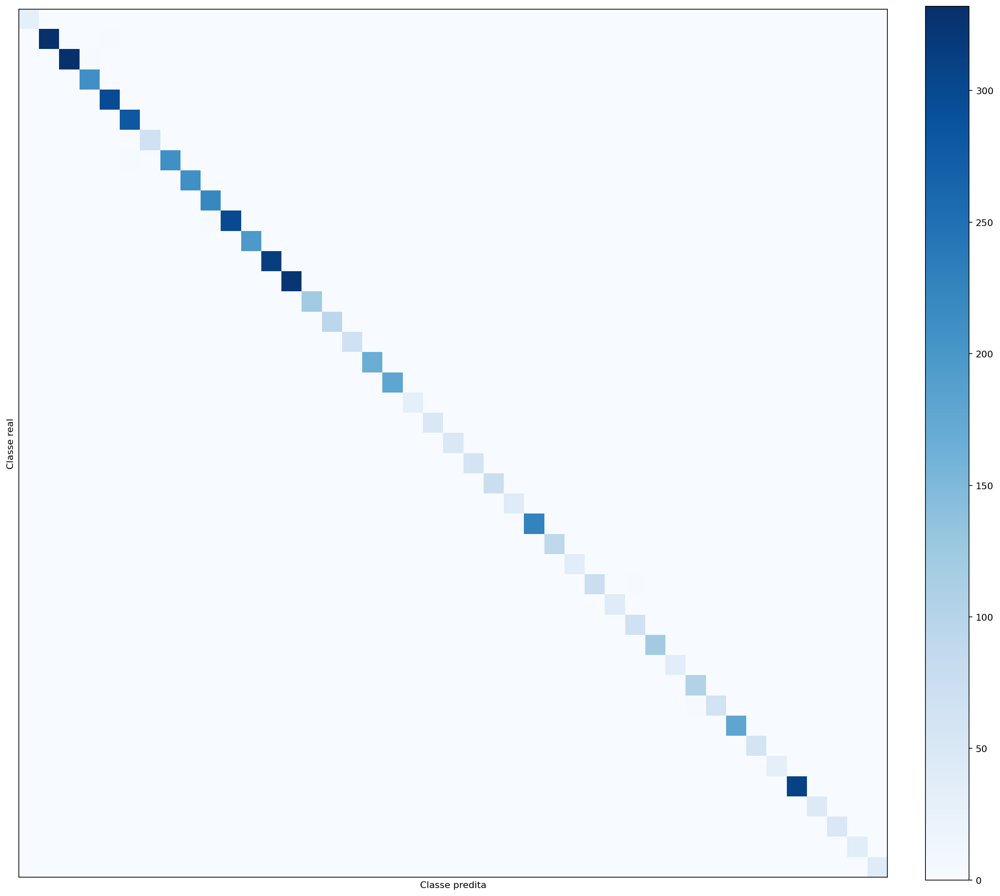
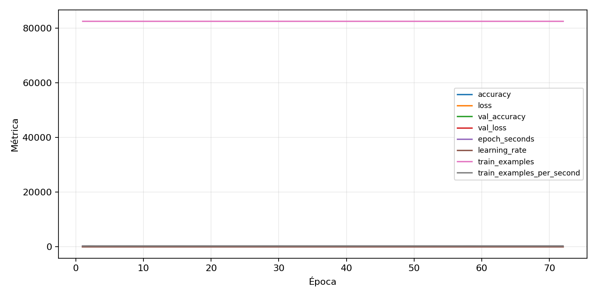

| n_samples | 5876 |
|---|---|
| loss | 0.023288758471608162 |
| accuracy | 0.9938733832539143 |
| balanced_accuracy | 0.9937973974761335 |
| macro_f1 | 0.9937103979614363 |


| Índice | Classe | Suporte | Precisão | Recall | F1 |
|---|---|---|---|---|---|
| 0 | 0 | 31 | 1.0 | 1.0 | 1.0 |
| 1 | 1 | 333 | 0.9910179640718563 | 0.993993993993994 | 0.992503748125937 |
| 2 | 2 | 337 | 0.996996996996997 | 0.9851632047477745 | 0.9910447761194029 |
| 3 | 3 | 211 | 0.9812206572769953 | 0.990521327014218 | 0.9858490566037736 |
| 4 | 4 | 297 | 0.9932885906040269 | 0.9966329966329966 | 0.9949579831932773 |
| 5 | 5 | 283 | 0.9894366197183099 | 0.9929328621908127 | 0.9911816578483243 |
| 6 | 6 | 67 | 1.0 | 1.0 | 1.0 |
| 7 | 7 | 211 | 0.9858490566037735 | 0.990521327014218 | 0.9881796690307328 |
| 8 | 8 | 211 | 0.995260663507109 | 0.995260663507109 | 0.995260663507109 |
| 9 | 9 | 220 | 0.990990990990991 | 1.0 | 0.9954751131221719 |
| 10 | 10 | 301 | 1.0 | 0.9933554817275747 | 0.9966666666666666 |
| 11 | 11 | 198 | 0.9949238578680203 | 0.98989898989899 | 0.9924050632911392 |
| 12 | 12 | 315 | 1.0 | 1.0 | 1.0 |
| 13 | 13 | 324 | 0.9969230769230769 | 1.0 | 0.9984591679506933 |
| 14 | 14 | 121 | 1.0 | 1.0 | 1.0 |
| 15 | 15 | 94 | 1.0 | 0.9893617021276596 | 0.9946524064171123 |
| 16 | 16 | 67 | 1.0 | 1.0 | 1.0 |
| 17 | 17 | 166 | 1.0 | 1.0 | 1.0 |
| 18 | 18 | 180 | 1.0 | 0.9888888888888889 | 0.9944134078212291 |
| 19 | 19 | 31 | 1.0 | 1.0 | 1.0 |
| 20 | 20 | 49 | 1.0 | 1.0 | 1.0 |
| 21 | 21 | 49 | 1.0 | 0.9795918367346939 | 0.9896907216494846 |
| 22 | 22 | 58 | 1.0 | 1.0 | 1.0 |
| 23 | 23 | 76 | 0.9868421052631579 | 0.9868421052631579 | 0.9868421052631579 |
| 24 | 24 | 40 | 1.0 | 1.0 | 1.0 |
| 25 | 25 | 225 | 0.9911894273127754 | 1.0 | 0.9955752212389382 |
| 26 | 26 | 90 | 0.989010989010989 | 1.0 | 0.994475138121547 |
| 27 | 27 | 36 | 1.0 | 1.0 | 1.0 |
| 28 | 28 | 76 | 0.9733333333333334 | 0.9605263157894737 | 0.9668874172185431 |
| 29 | 29 | 40 | 0.975609756097561 | 1.0 | 0.9876543209876543 |
| 30 | 30 | 67 | 0.9571428571428572 | 1.0 | 0.9781021897810218 |
| 31 | 31 | 121 | 1.0 | 0.9917355371900827 | 0.995850622406639 |
| 32 | 32 | 36 | 1.0 | 1.0 | 1.0 |
| 33 | 33 | 103 | 0.9809523809523809 | 1.0 | 0.9903846153846153 |
| 34 | 34 | 63 | 0.9838709677419355 | 0.9682539682539683 | 0.976 |
| 35 | 35 | 180 | 1.0 | 0.9888888888888889 | 0.9944134078212291 |
| 36 | 36 | 58 | 1.0 | 1.0 | 1.0 |
| 37 | 37 | 31 | 1.0 | 1.0 | 1.0 |
| 38 | 38 | 310 | 0.9967637540453075 | 0.9935483870967742 | 0.9951534733441034 |
| 39 | 39 | 45 | 0.9777777777777777 | 0.9777777777777777 | 0.9777777777777777 |
| 40 | 40 | 49 | 1.0 | 0.9795918367346939 | 0.9896907216494846 |
| 41 | 41 | 36 | 1.0 | 1.0 | 1.0 |
| 42 | 42 | 40 | 1.0 | 1.0 | 1.0 |
{"adapter":"gtsrb","balance_mode":"all_raw","class_names":["0","1","2","3","4","5","6","7","8","9","10","11","12","13","14","15","16","17","18","19","20","21","22","23","24","25","26","27","28","29","30","31","32","33","34","35","36","37","38","39","40","41","42"],"dataset":"gtsrb","dataset_options":{},"dataset_root":"/home/msduda/datasets-tcc/gtsrb","native_channels":3,"normalization":"zscore","num_classes":43,"protocol":{"checkpoint_monitor":"val_macro_f1","dtype_policy":"mixed_float16","early_stopping":{"patience":10,"restore_best_weights":true},"evaluation_augmentation":false,"input_channels":"native","optimizer":"Adam","pretrained_weights":false,"reduce_lr_on_plateau":{"factor":0.3,"min_lr":1e-07,"patience":4},"resize":"proportional_padding","test_time_augmentation":false,"training_from_scratch":true},"seed":42,"source_fingerprint":"e07bdb2a0cbaaa95924cda55fec26c2902b0cc736e3c6de8531ff96b0c7ee2e8","source_manifest":{"class_names":["0","1","2","3","4","5","6","7","8","9","10","11","12","13","14","15","16","17","18","19","20","21","22","23","24","25","26","27","28","29","30","31","32","33","34","35","36","37","38","39","40","41","42"],"joined_samples":39270,"metadata":{"layout":"gtsrb-folders-or-csv"},"name":"gtsrb","native_channels":3,"source_path":"/home/msduda/datasets-tcc/gtsrb","splits":{"test":12630,"train":26640},"target_size":128},"target_size":128,"test_fraction":0.15,"train_fraction":0.7,"training":{"augmentation":{"brightness_delta":0.03,"contrast_lower":0.92,"contrast_upper":1.08,"cutout_max_frac":0.08,"cutout_prob":0.25,"flip_lr":true,"noise_std":0.005,"translate_frac":0.05,"zoom_max":1.04,"zoom_min":0.96},"batch_size":512,"default_image_size":64,"dtype_policy":"mixed_float16","early_stopping_patience":10,"extra_fraction":2.0,"image_size_overrides":{"gtsrb":128},"keras_verbose":1,"learning_rate":0.0003,"max_epochs":100,"preprocess_cache_max_mib":2048,"reduce_lr_factor":0.3,"reduce_lr_min_lr":1e-07,"reduce_lr_patience":4,"shuffle_buffer_max_mib":1024},"validation_fraction":0.15}
{"epochs_completed":72,"epochs_recorded":72,"evaluation_seconds":19.30999203799729,"fit_seconds_current_attempt":19017.402102922002,"max_epoch_seconds":271.16859555300107,"max_epochs":100,"mean_epoch_seconds":260.18260687604175,"mean_train_examples_per_second":317.0000731323629,"median_train_examples_per_second":317.59469643236207,"min_epoch_seconds":249.0089174019995,"selected_checkpoint":"/mnt/e/tcc-benchmark/outputs/remaining-ram-capped/gtsrb/runs/gtsrb__zscore__all_raw__seed-42/checkpoints/best.keras","total_seconds":18733.147695075008,"training_seconds":18733.147695075008,"wall_seconds_current_attempt":19061.887723393003}
{"elapsed_seconds":19061.985483615,"event_counts":{"data_preparation_end":1,"data_preparation_start":1,"epoch_end":72,"evaluation_end":1,"evaluation_start":1,"fit_end":1,"fit_start":1,"periodic":3754,"run_completed":1,"train_start":1},"generated_at":"2026-08-01T16:18:54.003+00:00","gpu_backend":"pynvml","interval_seconds":5.0,"metrics":{"cpu_percent":{"count":3834,"max":40.0,"mean":10.996218049034951,"min":0.0,"p50":11.0,"p95":11.9},"disk_data_free_bytes":{"count":3834,"max":998258171904.0,"mean":998258016454.7104,"min":998258008064.0,"p50":998258016256.0,"p95":998258016256.0},"disk_data_percent":{"count":3834,"max":2.7,"mean":2.7,"min":2.7,"p50":2.7,"p95":2.7},"disk_data_total_bytes":{"count":3834,"max":1081101176832.0,"mean":1081101176832.0,"min":1081101176832.0,"p50":1081101176832.0,"p95":1081101176832.0},"disk_data_used_bytes":{"count":3834,"max":27850813440.0,"mean":27850805049.289516,"min":27850649600.0,"p50":27850805248.0,"p95":27850805248.0},"disk_output_free_bytes":{"count":3834,"max":248587022336.0,"mean":248571231070.1471,"min":248567996416.0,"p50":248571230208.0,"p95":248573609369.6},"disk_output_percent":{"count":3834,"max":75.1,"mean":75.1,"min":75.1,"p50":75.1,"p95":75.1},"disk_output_total_bytes":{"count":3834,"max":1000186310656.0,"mean":1000186310656.0,"min":1000186310656.0,"p50":1000186310656.0,"p95":1000186310656.0},"disk_output_used_bytes":{"count":3834,"max":751618314240.0,"mean":751615079585.8529,"min":751599288320.0,"p50":751615080448.0,"p95":751617449984.0},"elapsed_seconds":{"count":3834,"max":19061.884015,"mean":9534.805522625717,"min":0.025182,"p50":9532.7740855,"p95":18127.572087},"gpu_count":{"count":3834,"max":1.0,"mean":1.0,"min":1.0,"p50":1.0,"p95":1.0},"gpu_memory_percent":{"count":3834,"max":86.67874336242676,"mean":84.37911072434021,"min":32.691049575805664,"p50":84.91382598876953,"p95":85.88919639587402},"gpu_memory_total_bytes":{"count":3834,"max":8589934592.0,"mean":8589934592.0,"min":8589934592.0,"p50":8589934592.0,"p95":8589934592.0},"gpu_memory_used_bytes":{"count":3834,"max":7445647360.0,"mean":7248110420.532082,"min":2808139776.0,"p50":7294042112.0,"p95":7377825792.0},"gpu_temperature_c":{"count":3834,"max":57.0,"mean":49.28455920709442,"min":38.0,"p50":49.0,"p95":54.0},"gpu_utilization_percent":{"count":3834,"max":100.0,"mean":22.47809076682316,"min":1.0,"p50":3.0,"p95":96.0},"process_cpu_percent":{"count":3834,"max":347.5,"mean":129.7194314032342,"min":0.0,"p50":129.2,"p95":137.3},"process_read_bytes":{"count":3834,"max":473559040.0,"mean":406240869.75899845,"min":20992000.0,"p50":407523328.0,"p95":407523328.0},"process_rss_bytes":{"count":3834,"max":8638296064.0,"mean":8013204765.779864,"min":1003536384.0,"p50":8100302848.0,"p95":8451604480.0},"process_vms_bytes":{"count":3834,"max":51374411776.0,"mean":50828610054.14293,"min":39554781184.0,"p50":50888241152.0,"p95":51174506496.0},"process_write_bytes":{"count":3834,"max":1241088.0,"mean":1238259.0464267083,"min":4096.0,"p50":1241088.0,"p95":1241088.0},"ram_available_bytes":{"count":3834,"max":15541248000.0,"mean":8684122320.325508,"min":8059924480.0,"p50":8599097344.0,"p95":9157820825.6},"ram_percent":{"count":3834,"max":51.5,"mean":47.7462441314554,"min":6.5,"p50":48.3,"p95":50.4},"ram_total_bytes":{"count":3834,"max":16619089920.0,"mean":16619089920.0,"min":16619089920.0,"p50":16619089920.0,"p95":16619089920.0},"ram_used_bytes":{"count":3834,"max":8559165440.0,"mean":7934967599.674491,"min":1077841920.0,"p50":8019992576.0,"p95":8373142528.0}},"sample_count":3834,"schema_version":1}